CSS or Cascading Style Sheets is a language used to structure and style webpages. It helps maintain a consistent aesthetic among our sites.
Not only that, it helps saves time and disk space because CSS has features like External stylesheets
Webpages, just like our human bodies, are composed of layers. These are the (1) Content Layer, (2) Presentation Layer, and (3) Behavior Layer. From a single sentence in the site to even as big as web-based programs, these layers make websites what they are today.
Click this block to view my browser outputs!
CSS is composed of many things that make up its structure. Selectors which "find" HTML elements to which CSS rules will be applied, Properties which are style attributes we want to modify, Value which is the weight of the attribute, and Declerations which are the instructions that define a specific style for an element.
Another integral part of CSS is the style sheet which are a set of instructions on how to display various page elements. They can be classified into 3; External, Embedded, and Inline Style Sheets.
External style sheets have a .css file extension and they are the most global out of the three, Embedded is placed between the opening and the closing head element and are document-wide style rules. Inline Style Sheets are used for isolated changes to any element and can override both External and Embedded Style Sheets.
Click this block to view my browser outputs!
The display property controls element rendering as block (full-width sections) or inline (within text).
Div tags create sections, while span tags style text portions.
Click this block to view my browser outputs!
CSS rules consist of selectors and style declarations and style properties which are grouped into fonts, colors, text, boxes, lists, and tag classifications.
It explains CSS classes as user-defined selectors for applying reusable styles to specific HTML tags, defined using dots and applied with the "class" attribute.
element+class selectors are also for more precise styling of specific element types.
Click this block to view my browser outputs!
CSS selectors are used to target HTML elements for styling, and categorizes them into six types: class, element, ID, universal, group, and attribute selectors.
Element selectors apply styles to HTML tags, while ID selectors style a single, unique element.
The universal selector affects all elements, and the group selector, which applies the same styles to multiple elements, and attribute selectors which are based on HTML attributes.
Click this block to view my browser outputs!
This lesson is about setting dimensions and visibility of HTML elements using CSS, including properties like width, height, max/min-height, and max/min-width.
It also explains pseudo-classes for styling links based on their state (link, visited, hover, active) and emphasizes the importance of LVHA order.
The lesson also provides examples of how to implement these features with HTML and CSS code.
Click this block to view my browser outputs!
The most important thing I learned from the event is the value of believing in yourself. I can apply what I learned in real-life situations by believing in myself even in times when I feel like giving up. I actively participated in Buwan ng Wika by being the coach in the collab of LPSCi Debate Society and MAYA at the ASEAN Debate. My team clinched first place and I won "Best Coach" with an average of 99/100. I told my team to believe in their capabilites even as first time debaters and they did. If I were to teach this topic to a classmate I would say that believing in yourself is the best favor you can do for yourself in times of hardships. It is important to have an event like Buwan ng Wika in order for us to value our "wikang mapagpalaya" which is Filipino.
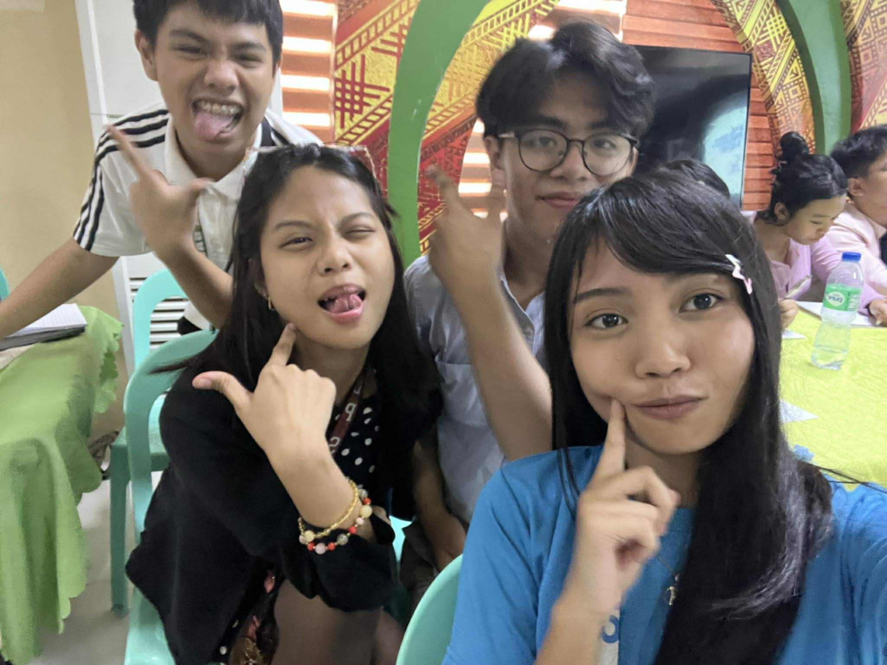
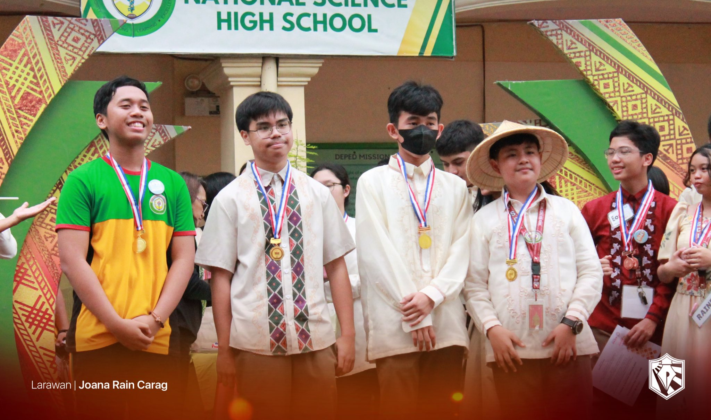
I learned from the event the value of sportsmanship in every team. I can apply it to real-life by maintaining a kind attitude to my opponents in every game or competition I play or participate in. I actively participated in Intrams by playing for our Mobile Legends Girl team and I placed third. If I were to teach this subject to a classmate, I would tell them that a true "win" from playing a game or a sport isn't the trophy you gain from it, it's the kind attitude you displayed and the friends you made along the way. It is important to have intrams for us to be able to culminate kinesthetic talent and capabilities of our students in LPSci.
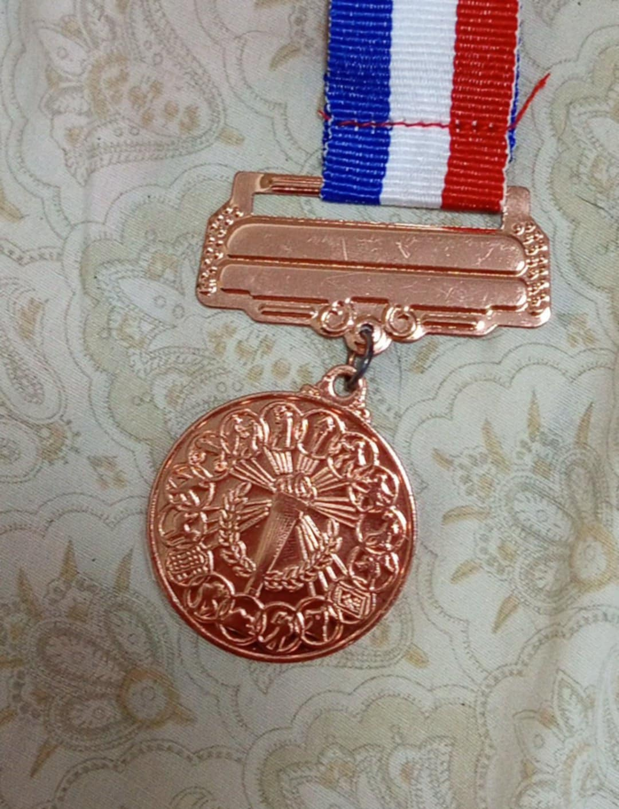
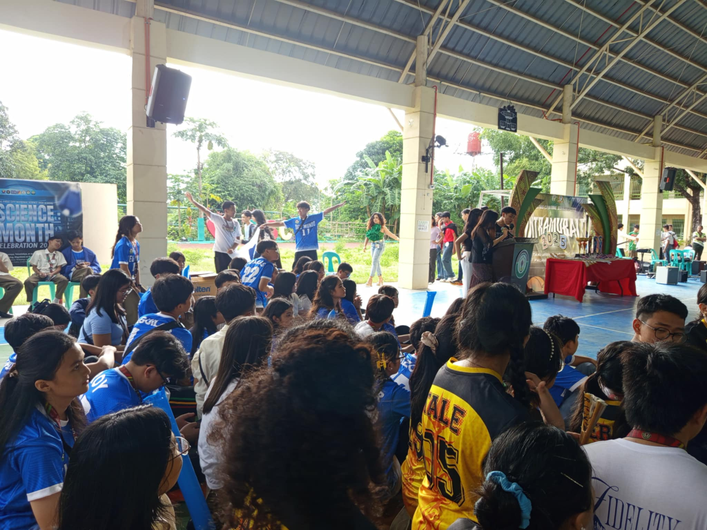
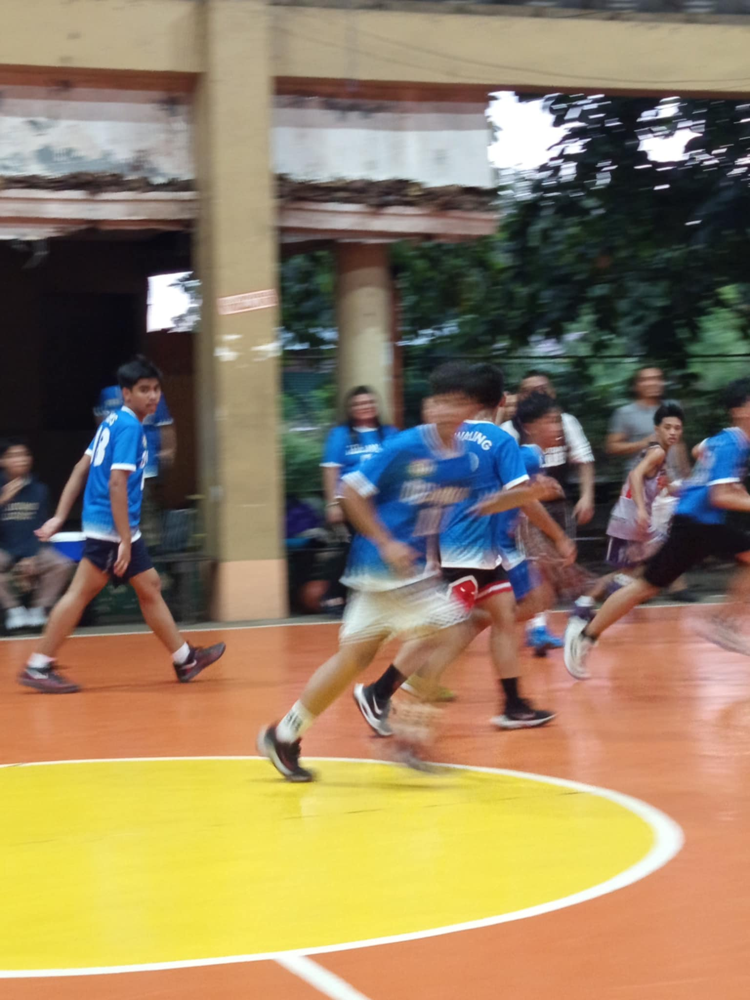
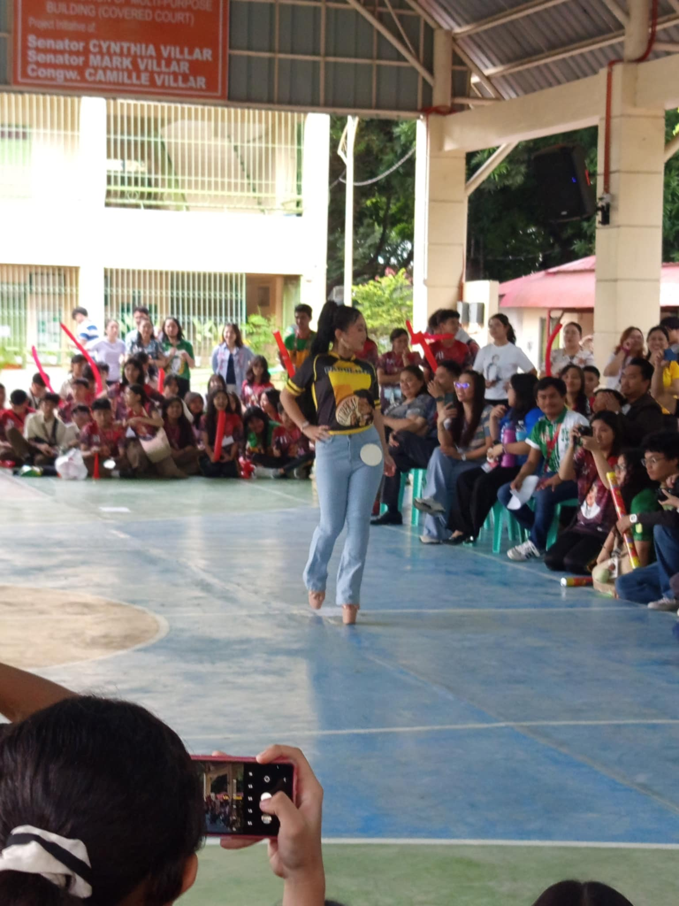
I learned from the event the value of our health and hygiene. I can apply what I learned by continuing to take care of my hygiene by washing my hands properly and brushing my teeth after meals. I actively participated in Science Month by being the one who headed the design and the conceptualization of our WinS Corner, even making all the graphics that we used in it. If I were to teach this subject to a classmate, I would tell them all about the true value of WinS Corner and how it's not just about who has the flashiest one, it's about who actually uses it and applies what it says in their lives. Because that is the true "Win." It is important to have a monthly event like the Science Month in order for us to appreciate Science as one of the core foundations that explain almost everything in life.
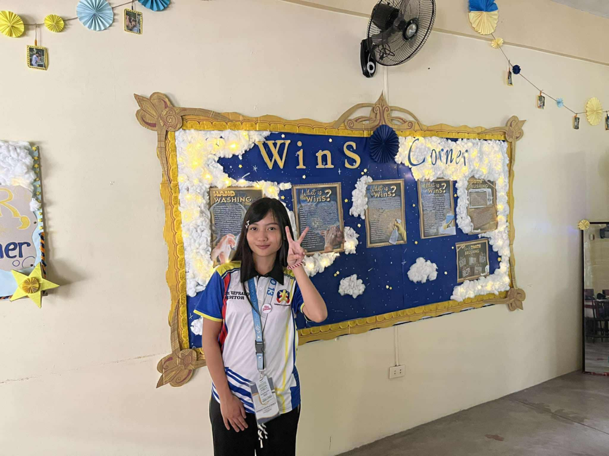
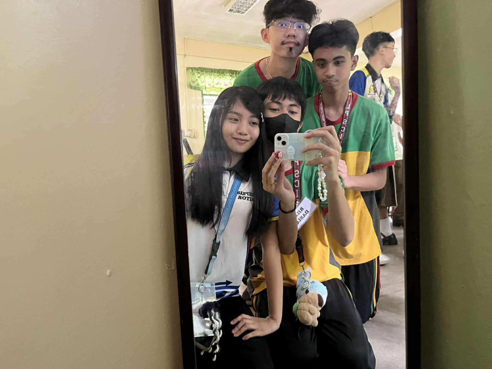
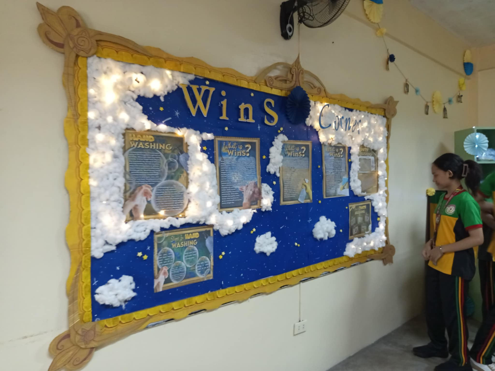
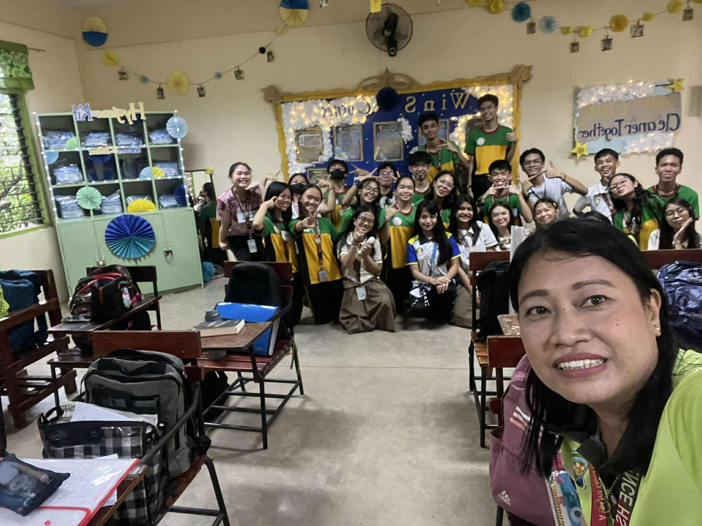
I learned from the event the value of cooperation within a team because my officers and I worked together to organize AP Month and its activities. I will apply what I learned to my other organizations and clubs, applying teamwork and proper organization and dissemination of tasks so that everything will flow smoothly. I actively participated in my club's Month by designing the tarpaulin for our opening, hosting the Quiz Bee for Junior High, and helping in the making of our Art Gallery. If I were to teach this topic to a classmate, I would teach them that cooperation within a group setting is the key to success. It is important to have a monthly subject event like that of AP so that we learn to appreciate history and our culture and everything it has to offer.
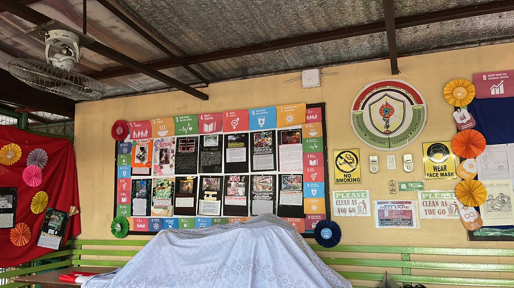
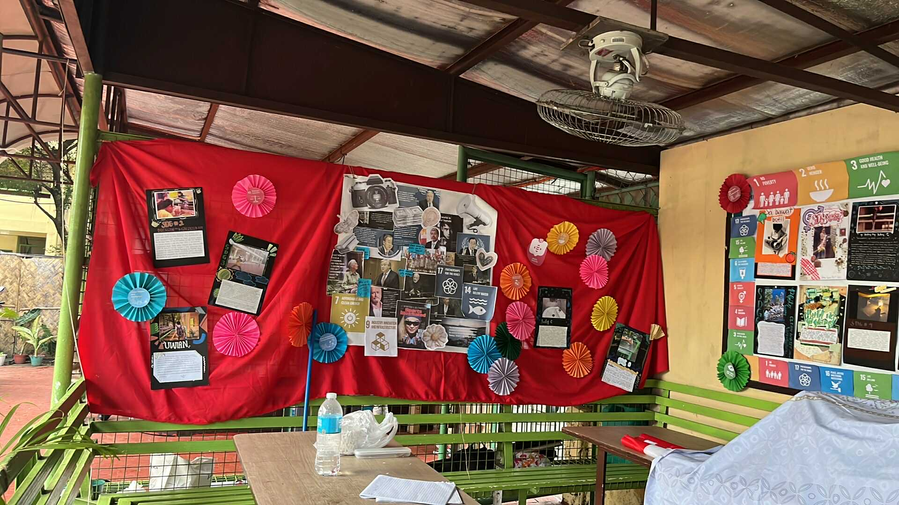
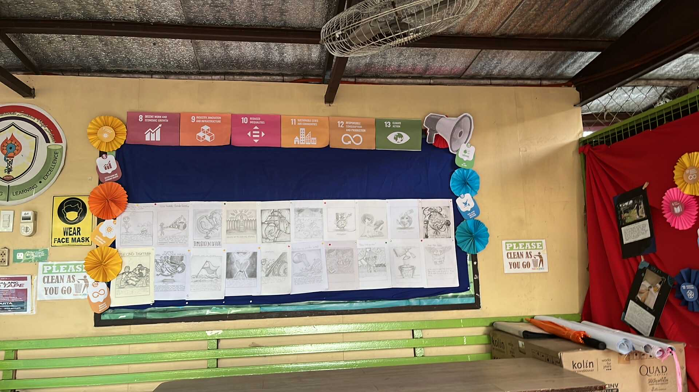
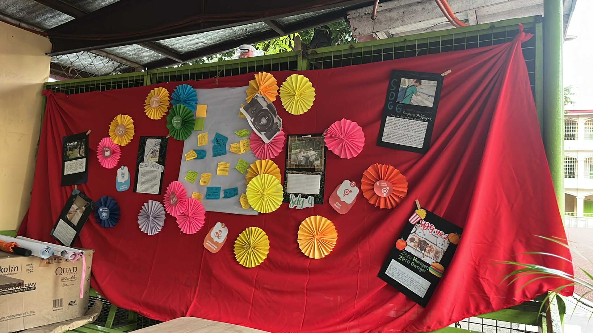
I learned from the event the value of appreciating our teacher's hard work and their role in shaping students like me not just academically but also as a mentor to face life's challenges. I can apply what I learned by continuing to show respect and love to my teachers. I actively participated in Fairness' Teachers Day event by volunteering to play at the games the officers organized for us and the teachers to play. I had lots of fun and shared laughter with both my teachers and classmates. If I were to explain this subject to a classmate, I would say that it was one of the best Teacher's Day I've ever experienced. It's important to have an event like this so that we have a day dedicated to our teachers and we take time appreciating their hardwork and passion for the things they do to us as students.